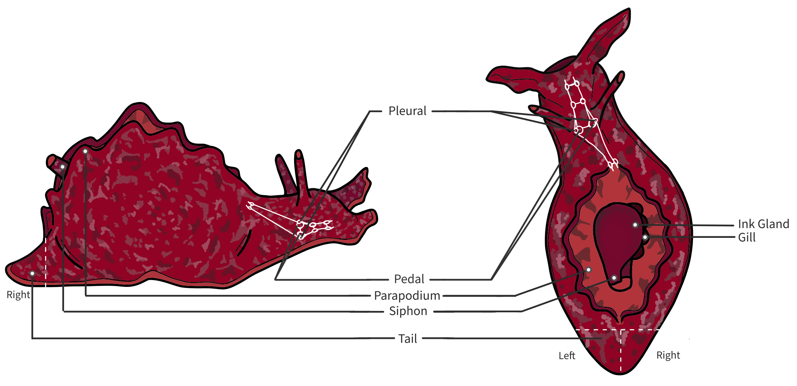
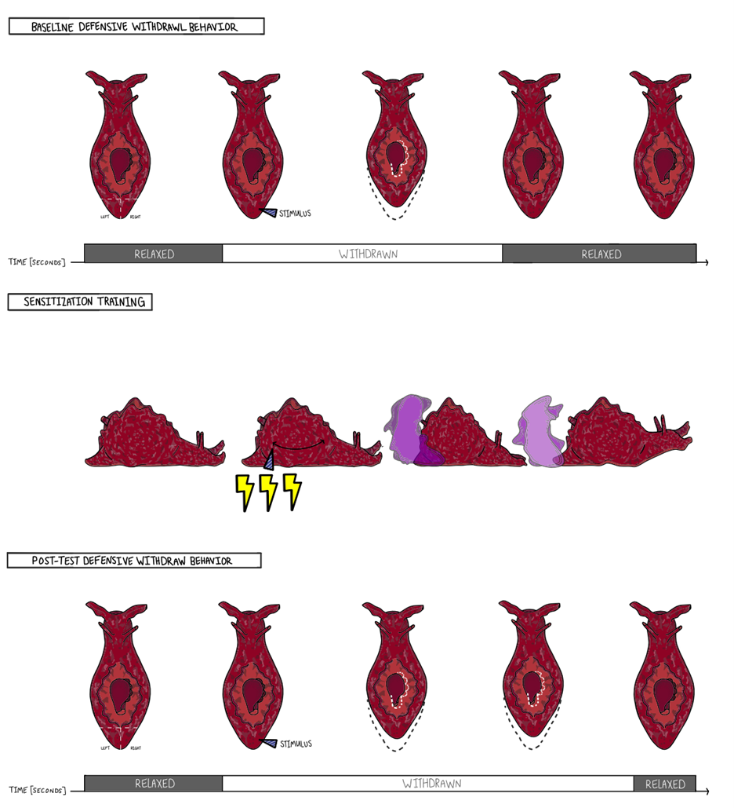
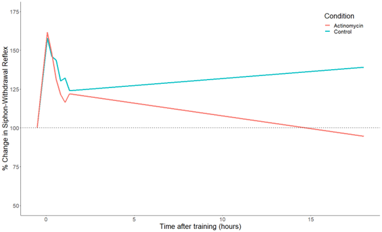
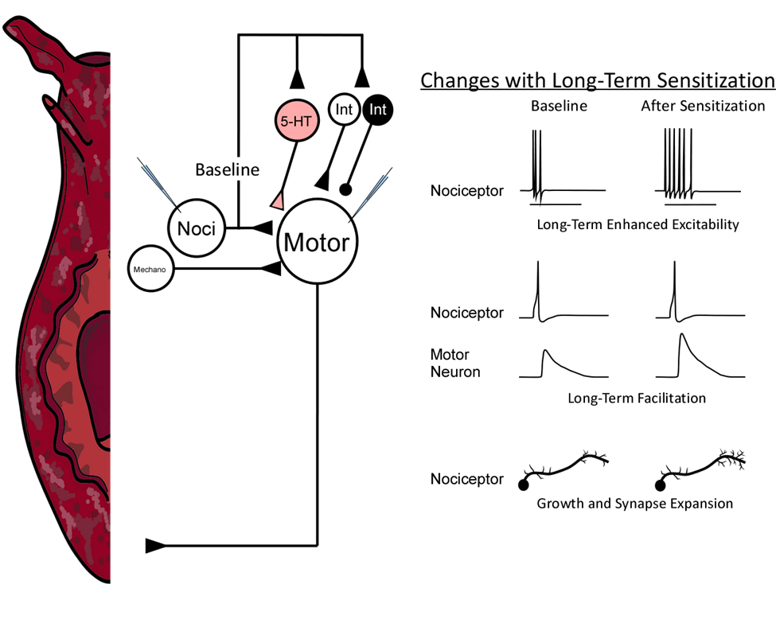

3 Background: Sensitization Memory in Aplysia
3.1 Sensitization is a conserved and adaptive form of non-associative pain memory
Sensitization is a non-associative form of memory for painful experiences; it is expressed as a generalized increase in responsiveness that persists after exposure to a noxious stimulation (Thompson and Spencer 1966). Sensitization memory helps organisms that have experienced pain re-allocate their behavioral repertoire to avoid additional injury, aiding the chances of survival (Crook et al. 2014). Sensitization is observed across the animal kingdom (Abramson 1994) and has been hypothesized to represent basal memory mechanisms from which more complex forms of memory evolved (Robert D. Hawkins and Kandel 1984). Mechanistically, sensitization shares many characteristics with clinical dysregulation of pain processing, including allodynia and hyperalgesia (Edgar T. Walters et al. 2023).
3.2 Aplysia are marine mollusks especially suitable for exploring the neurobiology of memory
Aplysia is a genus of marine gastropod useful for linking behavioral and neural plasticity (Figure 3.1). Studies have primarily focused on Aplysia californica, which is found throughout much of the western coast of North America and Aplysia kurodai, which is found in South-East Asia. Aplysia have several advantages for linking behavior to neural function: 1) they have a relatively simple CNS consisting of about 10,000 neurons (Cash and Carew 1989), 2) the neural circuitry underlying several ethologically-relevant behaviors has been mapped at the single-cell level (L. J. Cleary, Byrne, and Frost 1995a), and 3) many Aplysia neurons are large, enabling repeated physiological measurements, single-cell manipulation of gene expression, and single-cell qPCR (Lovell and Moroz 2006).

3.3 Painful shocks increase the duration of defensive withdrawal reflexes in Aplysia, a form of sensitization memory
In Aplysia, sensitization memories can be induced by attack from their natural predators, including pinching from lobsters (Mason et al. 2014; Watkins et al. 2010) and strikes from the carnivorous gastropod Navanax (Pepino et al. 2022). For experimental control, though, sensitization training typically consists of the application of one or more strong electrical shocks (Pinsker et al. 1973a; Scholz and Byrne 1987a). The level of shock is calibrated to produce pain-related behaviors (withdrawal, inking, and escape locomotion) without causing notable tissue damage. This ensures that any behavioral changes observed after training are due to changes in the nervous system.
Sensitization training produces an altered behavioral state in Aplysia: they become more likely to exhibit escape locomotion (Stopfer and Carew 1988), heart rate becomes elevated (Krontiris-Litowitz 1999; Marinesco et al. 2004a), and food-seeking behavior is temporarily suppressed (Acheampong et al. 2012). The most studied behavioral phenotype, however, is the duration of defensive withdrawal reflexes (Carew, Castellucci, and Kandel 1971), behaviors in which an innocuous stimulus (light touch, weak electrical shock, mild water pressure) triggers a protective retraction of sensitive body parts. A number of different withdrawal reflexes have been studied, including the gill-withdrawal reflex, the tail-withdrawal reflex, and the siphon-withdrawal reflex (the siphon is a respiratory structure). While details vary somewhat, each of these defensive behaviors provides a clear and robust index of sensitization memory: after sensitization training a typical animal will maintain a withdrawal reflex 2-3 times as long as before training (Figure 3.2). The strength of sensitization memory can then be tracked over time, as measurement of defensive withdrawals can be made fairly frequently without notable fatigue or habituation. Sensitizing shocks can be applied to just one side of the body. This produces sensitization of tail-evoked reflexes only on the side of training (Scholz and Byrne 1987b), allowing within-subjects experiments comparing the trained and untrained sides of the nervous system.

3.4 Serotonergic neuromodulation is a key factor in the induction of sensitization in Aplysia
The development of the sensitized state in Aplysia depends on shock-induced serotonin release. Sensitization training produces prolonged activation of serotonergic fibers and increases serotonin concentrations at synapses involved in modulated behaviors (Marinesco et al. 2004b). Depletion of serotonin prevents the development of a sensitized state (Glanzman et al. 1989), and soaking animals in serotonin produces sensitization (Bonnick et al. 2012; Levenson et al. 2000). The close linkage between sensitization training and serotonin has enabled serotonin exposure to serve as a substitute for sensitization training not only in whole animals but also in cellular models of sensitization (see Section 3.7).
3.5 Sensitization in Aplysia has short-, intermediate- and long-term phases that are distinct in mechanism and induction requirements
The seemingly unitary process of sensitization memory has been dissociated into different phases, each with distinct mechanisms operating at different time scales (Figure 3.3). Three different phases of sensitization have been well-characterized (Vincent F. Castellucci et al. 1989; Sutton et al. 2002; Sutton et al. 2004):
Short-term sensitization, which develops rapidly after training but lasts less than 1 hour; this phase of memory does not require changes in translation or transcription
Intermediate-term sensitization, which develops within 30 minutes of training and lasts less than 3 hours; this phase requires changes in translation but not transcription
Long-term sensitization, which develops slowly (> 6 hours) but can last for weeks; long-term sensitization requires changes in both translation and transcription
These phases of memory have been dissociated not only by their molecular requirements but also by their induction requirements. Very limited training (a single shock) induces only short-term sensitization that rapidly fades. Moderate levels of training (3 spaced shocks) produces short- and intermediate-term sensitization that last several hours. Extensive training (5 spaced shocks) induces short-, intermediate-, and long-term phases of sensitization, producing a sensitization memory expressed for several days. This different engagement of memory mechanisms depends not only on the quantity of training but also on the pattern: massed training (5 shocks delivered in immediate sequence) fails to produce long-term sensitization (Sutton et al. 2002; Wainwright et al. 2002), and intermittent spacing can produce especially robust long-term sensitization (G. Zhang et al. 2012a). One of the key questions addressed in the Induction section is why only some patterns of training induce long-term sensitization.

3.6 Long-term sensitization is encoded via long-term cellular, synaptic, and structural plasticity in the defensive withdrawal circuits of Aplysia
Long-term sensitization training produces a marked and long-lasting increase in the duration of defensive reflexes in Aplysia (Pinsker et al. 1973b). Careful work has traced the neural circuitry underlying these defensive behaviors and revealed that sensitization memory is expressed in these circuits through long-lasting changes in excitability, synaptic strength, and growth.
While details vary between the different defensive reflexes that have been studied (siphon withdrawal, tail withdrawal, gill withdrawal), each defensive reflex is mediated by a simple two-layer reflex circuit augmented by both polysynaptic pathways and neuromodulatory inputs (Figure 3.4) (L. J. Cleary, Byrne, and Frost 1995b). Input to defensive withdrawal circuits is carried by low-threshold mechanoreceptors with cell bodies in the peripheral nervous system (Calin-Jageman and Fischer 2007; L. Frost et al. 1997) and high-threshold nociceptors with cell bodies in the central nervous system that innervate the siphon (Byrne, Castellucci, and Kandel 1974), gill (V. Castellucci, Pinsker, and Kupfermann 1970), and body wall (Walters et al. 2004; E. T. Walters et al. 1983). The sensory neurons form excitatory glutamatergic synapses onto siphon, tail, and gill motor neurons (Dale and Kandel 1993; Hening et al. 1979; Hickie and Walters 1995). This direct sensory-to-motor circuit is sufficient, on its own, to produce withdrawal behaviors (Antonov, Kandel, and Hawkins 1999), but motor neuron output is also sculpted by populations of interneurons that receive sensory inputs and which relay both excitation and inhibition on to reflex motor neurons (L. J. Cleary and Byrne 1993; R. D. Hawkins, Castellucci, and Kandel 1981). The reflex circuits in Aplysia are also regulated by modulatory inputs. This includes polysynaptic innervation from neurons releasing Phe-Met-Arg-Phe-NH2 [FMRFa; Mackey et al. (1987)], an inhibitory neuromodulator, as well as diffuse serotonergic inputs (Marinesco et al. 2004c), which serve a key role in the induction of sensitization.

Long-term sensitization memory is encoded at multiple sites in the defensive reflex circuits of Aplysia, with notable long-term changes in the input, interneuron, and motor-neuron layers (L. J. Cleary, Lee, and Byrne 1998b; Trudeau and Castellucci 1995). Although encoding is diffuse, modification of the nociceptors at the input layer of the circuits represents a prominent site of storage. These nociceptors are strongly activated by the noxious shocks used for sensitization training [@walters1987]. This barrage of activity coupled with shock-induced serotonin release (Marinesco and Carew 2002) produces long-lasting physiological changes, including enhanced excitability (Scholz and Byrne 1987c), spike narrowing (Antzoulatos and Byrne 2007), and facilitation of synaptic contacts with motor neurons (W. N. Frost et al. 1985). With extensive training protocols, these physiological changes are accompanied by morphological changes, with the nociceptors sprouting new synapses and enlarging synaptic active zones (C. H. Bailey and Chen 1983; Craig H. Bailey and Chen 1989; Wainwright et al. 2002). The summative impact of these physiological and structural changes is the expression of long-term sensitization memory. Consistent with this, blocking transcription during training also prevents long-term changes in synaptic strength (Vincent F. Castellucci et al. 1986) and synaptic outgrowth (Craig H. Bailey et al. 1992).
3.7 Analogs of sensitization memory can be observed in whole ganglia and in cell culture
The study of sensitization in Aplysia has been greatly facilitated by the development of analogs that can be studied in whole ganglia (e.g. F. Zhang, Goldsmith, and Byrne 1994) and cell culture (e.g. Montarolo et al. 1986), providing opportunities for both manipulation and measurement that would not be feasible when studying intact animals. For cell culture, components of the defensive withdrawal circuits can be reconstituted by co-culturing sensory nociceptors with gill or siphon motor neurons, reproducing the direct glutamatergic pathway that strongly contributes to both normal withdrawal behavior and the encoding of sensitization memory.
In cellular studies, serotonin exposure is used to simulate sensitization training. In both whole ganglia and in culture, serotonin produces the same distinctive patterns of plasticity in Aplysia nociceptors that help encode sensitization memory in intact animals, including enhanced excitability of the nociceptor sensory neuron and both short- and long-term synaptic facilitation of this sensory neuron-motor neuron synapse (Liu et al. 2011; Montarolo et al. 1986). Moreover, cellular models precisely recapitulate the phases of sensitization observed in intact animals: a single pulse of serotonin produces a rapid but transient increase in nociceptor excitability and synaptic strength that is unaffected by treatments that prevent transcription; 5 spaced pulses of serotonin produces a long-term facilitation of synaptic strength and the sprouting of new synapses, and these long-term effects depend on changes in neuronal transcription (Montarolo et al. 1986). Even more striking, cellular models mirror the impact of pattern of training, with massed exposure of serotonin (a single prolonged exposure) ineffective at producing long-term changes (Mauelshagen, Sherff, and Carew 1998), and some intermittently-spaced protocols producing especially strong changes (G. Zhang et al. 2012b).